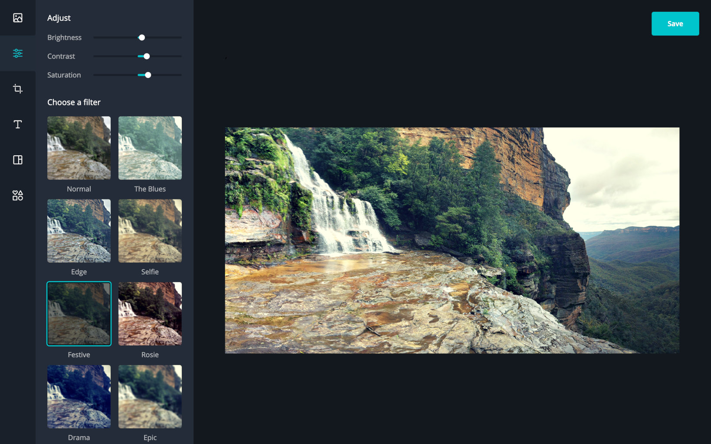

Canva Photo Editor

Edit photos online
Photo Editor (2019) is an online tool by Canva for simple image editing. It features pre-set filters, simple adjustment sliders, crop, resize, and rotation tools.
This tool existed primarily as a way to promote the main design platform Canva. Users coming in to edit photos are likely to have some design needs for their edited images, so there are a few promotional paths to Canva in the photo editor itself.

The Photo Editor had a previous version which was made by a third party developer in a proprietary framework on top of Angular 1 and Node 5. It was a bit difficult to maintain and iterate on. It was also not responsive so we’re missing out on mobile users.
A redesign and rewrite was needed for future improvement.
 Old version
Old version
So around Summer 2019 (Australian Summer 2018–2019), a redesign was made and the app was rewritten in a more modern stack. The revamped version looks better, more modern, and is responsive.
My part in this redesign was the coding of the webapp and the landing page.
I chose to write the app in React with MobX. MobX really helped simplify the state management of the whole app.
There are a few WebGL and canvas filter algorithms from the old app that I reimplemented. I had to dip my toes into some fragment shaders for the WebGL version. The app uses glfx.js for WebGL browsers and CamanJS for non-WebGL browsers.
The backend is a simple server written with Express and the whole app was deployed on Heroku.

The project was completed in around 2 months.
 The landing page
The landing page
After the revamp we saw doubling in conversion rate (that is, Canva signups), so we can say that the project was a success! 🎉
Update: The standalone app has been decommissioned, and photo editing features are now part of the main app.